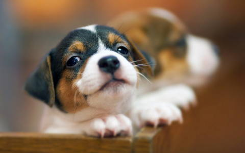
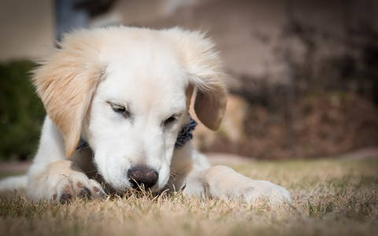
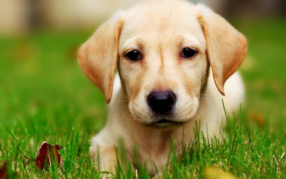
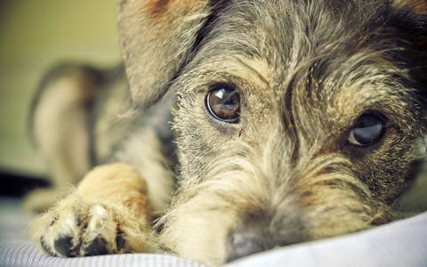
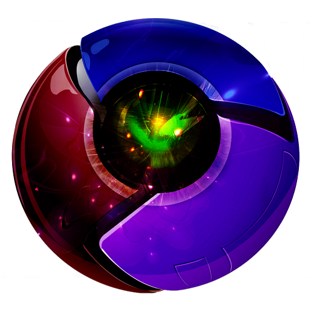

WOW.js + Animate.css
fadeInRight

class="wow fadeInLeft"
zoomInUp
class="wow zoomInUp" data-wow-offset="200"
flipInX
class="wow flipInX" data-wow-offset="200"
flipInY
class="wow flipInY" data-wow-offset="200"
Кучка
zoomInDown
class="wow zoomInDown" data-wow-offset="200"
tada

class="wow tada" data-wow-offset="200"
rotateIn
class="wow rotateIn" data-wow-offset="200"